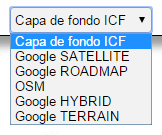

Capa de Fondo
Una Capa de Fondo proporciona un contexto geográfico para el contenido que se desea mostrar en el mapa. A través del especifico control el usuario puede seleccionar la Capa de Fondo más apropiada entre un listado de opciones disponibles, definido por el Administrador. No se puede seleccionar más que una Capa de fondo.

Selección de la capa de fondo